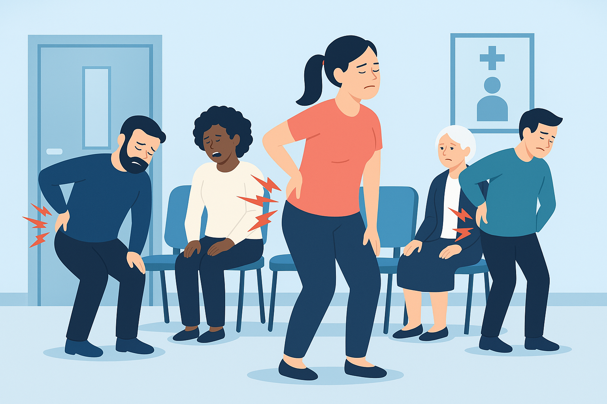

Projet de stage M2 :
Santé & climat extrême
Ce projet prend la forme d’une note méthodologique, réalisée dans le cadre d’un stage de six mois au Département Analyse et Science des Données de la Cour des Comptes. Nous avons cherché à évaluer l’impact des vagues de chaleur sur la santé des populations vulnérables.
L’étude repose sur des modèles statistiques (régression de Poisson et quasi-Poisson) appliqués à des données de santé (passages aux urgences, hospitalisations, consultations, décès en EHPAD/SSIAD), croisées avec les données de température fournies par Météo France. L'ensemble des traitements et modélisations ont été réalisés à l’aide du logiciel R.
Nos analyses montrent une hausse marquée des passages aux urgences pendant les vagues de chaleur, en particulier chez les personnes âgées, tandis que les hospitalisations diminuent, probablement en raison d’un report des soins non urgents. Les effets varient selon la durée et l’intensité des vagues, le territoire et les pathologies concernées.
Ce travail fournit des éléments pour anticiper les besoins de soins en période de chaleur extrême, et enrichit les réflexions menées dans le cadre du rapport public annuel 2024 de la Cour des Comptes.
Projet de M2 :
Détection du risque lombaire

L’objectif est de construire un modèle de classification permettant de prédire le risque de développer des douleurs lombaires à partir de caractéristiques biomécaniques issues d'examens radiologiques.
À partir du Vertebral Column Dataset (UCI, 310 observations), deux modèles sont entraînés : Random Forest et XGBoost.
Après nettoyage et analyse exploratoire, les performances sont évaluées par des métriques telles que l’exactitude, la précision et l’AUC.
Le modèle XGBoost atteint une AUC de 0,78, confirmant sa capacité à identifier les individus à risque et soulignant l’intérêt de ces outils pour la prévention en santé publique.
Mémoire de M1 :
Barrières financières aux soins
Ce mémoire étudie les facteurs socio-économiques qui poussent certains individus à renoncer aux soins médicaux, dentaires ou optiques pour des raisons financières.
L’analyse repose sur les données de l’enquête ESPS 2014, traitées à l’aide du logiciel SAS, via des régressions logistiques. L’impact de variables telles que l’âge, le sexe, le revenu, le diplôme, l’état de santé perçu ou encore la couverture complémentaire est évalué.
Les résultats montrent que les femmes, les personnes à faible revenu ou sans complémentaire santé sont les plus concernées. Les soins dentaires sont les plus touchés, suivis des soins optiques et des consultations médicales.
Cette étude contribue à évaluer l’équité du système de santé français et propose des pistes pour améliorer l’accès aux soins.